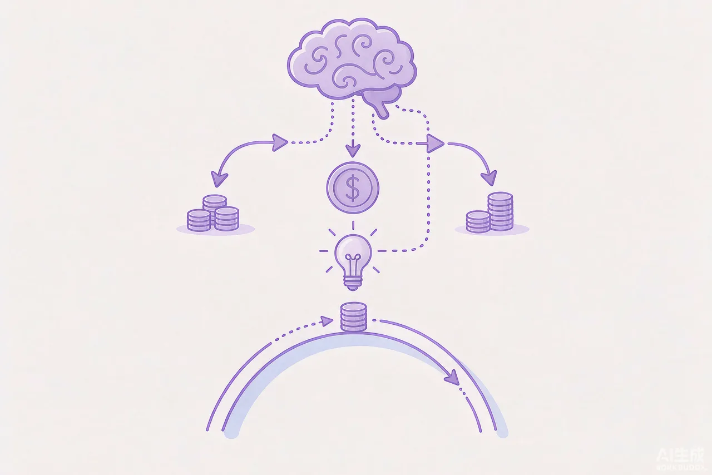

主观价值的神经编码
研究腹内侧前额叶与腹侧纹状体如何整合数量、概率与偏好，形成可比较的主观价值信号。典型发现是价值信号随选项的主观吸引力变化，而非仅随客观金额变化；损伤该区域者可能在简单选择中表现出明显混乱。这在损伤研究中尤为明显。
交叉与新兴方向 · DISCIPLINE
Neuroeconomics
从脑机制解释选择与决策行为
神经经济学以经济决策的神经与心理机制为对象，融合神经科学、经济学与心理学。它关注价值评估、风险偏好、跨期选择与社会互动中的脑活动，核心问题包括主观价值如何在脑中编码、情绪与认知如何共同影响决策，以及社会规范与奖励的神经基础。最后通牒博弈的脑成像研究发现，面对不公平提议时前脑岛活动增强，且活动越强越可能拒绝。借助功能成像与计算模型，该领域把经济学理论与神经证据相连接，同时讨论实验结论向真实市场情境推广的限度。这也是该领域持续自我反思的方向。

这个分支主要研究什么
研究腹内侧前额叶与腹侧纹状体如何整合数量、概率与偏好，形成可比较的主观价值信号。典型发现是价值信号随选项的主观吸引力变化，而非仅随客观金额变化；损伤该区域者可能在简单选择中表现出明显混乱。这在损伤研究中尤为明显。
考察杏仁核、前额叶与脑岛在风险感知和模糊情境中的作用，解释框架效应与个体差异的神经基础。研究发现，潜在损失引发更强的情绪相关脑活动，而明确概率与模糊概率激活的模式并不相同。情绪与注意会共同调节风险判断。
探讨即时奖励与远期目标的神经权衡，分析延迟折扣率如何受情境、情绪与自我控制影响。典型现象是人们对近期奖励赋予更高主观价值，脑成像显示这一权衡涉及边缘系统与前额叶控制系统的互动。发展差异也体现在折扣率上。
研究信任、公平与惩罚行为中的脑机制。最后通牒博弈中，不公平提议会引发与厌恶相关的前脑岛活动，活动越强越倾向于拒绝；共同决策与互惠还涉及对他人意图的推断与奖励预期。跨文化差异与规范学习亦会影响公平判断与惩罚意愿。
以强化学习与效用模型参数解释神经活动，检验预测误差、折扣率等理论构念的神经对应。联合分析让行为参数与脑信号相互约束，同时也需面对某脑区是否真在计算该变量的解释边界。这也是联合分析必须持续面对的解释难点。
这一分支能带来什么
学习这一方向能让你把决策看作价值、情绪与社会规范共同作用的结果，而不是单纯算账。你会更能识别框架、损失厌恶与不公平感对日常选择的影响，也更懂得评审相关研究时注意样本与情境限制。
一项奠定了这个领域的研究
传统经济学假定人只追求自身收益最大化，但行为实验反复显示，人们会拒绝不公平的分配提议。研究者让被试在功能磁共振扫描仪中玩最后通牒博弈，系统操纵对方提出的分配比例，并记录接受或拒绝的决定与脑活动。结果发现，面对不公平提议时，与厌恶情绪相关的前脑岛活动增强，且活动越强，被试越倾向于拒绝；前额叶区域也参与规范与冲动的权衡。该研究说明社会偏好和情绪在决策中不可忽视，为经济学理论提供了神经层面的约束，也成为神经经济学的经典范例。
还没定论的问题，往往最值得追问
实验常用小额奖惩、匿名对手与学生样本，结果能否推广到真实市场、高金额决策与长期使用情境仍存疑。复制研究也提示部分早期效应不够稳定，需要在多样化样本中检验。
把某脑区活动直接解释为公平感或购买欲容易越过证据边界；相关发现被商业机构包装为神经营销时，常忽视统计不确定性与伦理问题。研究者强调反向推断的谨慎。
把概念带回日常观察
请想象有人要把一百元分给你，方案一是九比一，方案二是五比五。写下你会接受还是拒绝，以及理由。再设想这只是一次匿名游戏、对方是陌生人，看你的答案是否变化。多数人会在极端不公时愿意放弃收益。仅作自我观察，不构成诊断。
怎么研究，用在哪里
进入这个分支的术语入口
与这一领域密切相关的名字
推动神经经济学领域形成，研究价值编码与决策的神经计算机制。
将行为经济学与脑成像结合，推动社会决策和博弈的神经经济学研究。
通过任务范式与脑成像结合，持续检验价值与风险加工的理论假设。